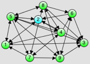
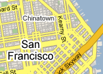

|
Wie findest du den kürzesten Weg zu deinem Ziel wenn du irgendwo hin- gehst oder fährst? Natürlich benutzt du einen Routenplaner wie z.b. Google Maps oder ein Navi. Oder du bevorzugst vielleicht immer noch "altmodische" Karten um deinen Weg zu finden. Man kann leicht einen guten, wenn nicht kürzesten, Weg zwischen zwei Orten mit Hilfe einer Karte bestimmen. Das geht weil Menschen relativ gut bei dieser visuellen Aufgabe sind, solange nur benachbarte Orte auf der Karte miteinander verbunden sind. Aber versuche mal den kürzesten Weg zwischen dem Punkt 2 und allen anderen im Beispiel rechts zu finden. Nicht einfach, oder? |
 |
|  |
Vielleicht sollten wir lästige Aufgaben wie diese Computer überlassen, die das recht gut können. Zuerst mal brauchen sie eine Abstraktion realer Dinge aus der echten Welt in einem Format das sie "verstehen" können. Für Karten verwenden Computer oft Graphen, wobei Orte (z.b. Städte) durch Knoten dargestellt werden und Verbindungen zwischen Orten (z.b. Straßen) durch Kanten repräsentiert werden. Das obige Bild stellt einen Graphen dar wobei nummerierte Knoten durch Kanten (Linien) verbunden sind. |
Wie findet ein Computer nun den kürzesten Weg zwischen zwei beliebigen Orten, sobald er über geographischen Positionen und Verbindungen Bescheid weiss? Wie würdest du "ihm sagen" dass er es machen soll? Alle möglichen Wege zwischen zwei Punkten finden und ihre Länge vergleichen? Das könnte eine Weile dauern, sogar für einen schnellen Computer. Es muss einen besseren Weg geben? Es gibt einen.
Eine relativ einfache, jedoch durchaus mächtige, Methode um die kürzesten Wege zwischen einem Startknoten und allen anderen Knoten in einem Graphen zu finden, ist Dijkstra's Algorithmus zu benutzen. Hab' keine Angst vor dem Wort "Algorithmus". Stell dir einen Algorithmus als einen eindeutigen Plan vor, den ein Computer ausführen kann um ein bestimmtes Problem zu lösen. Von einer gegebenen Eingabe (z.B. einem Graphen) wird vom Algorithmus ein Ergebnis berechnet (z.B. die kürzeste Wege zu einem Startknoten). Elegante und effiziente Algorithmen zu entwickeln ist eine Herausforderung und fortwährender Gegenstand der Forschung.
Wie funktioniert Dijsktra's Algorithmus nun? Anstatt alle möglichen Wege zwischen dem Startknoten und allen anderen Knoten zu überprüfen, werden die kürzesten Wege zu näher am Startknoten liegenden Knoten zuerst gefunden (die kürzeren kürzesten Wege). Dieses zusätzliche Wissen wird dann dazu genutzt die Wege zu weiter entfernten Knoten zu finden.